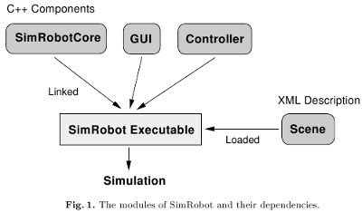

|
Architecture Components |
|
As shown in Fig. 1, SimRobot consists of several modules that are linked
to one single application. This approach, which is different from many other
client/server-based simulation concepts, has been chosen because it offers the
possibility of halting or stepwise executing the whole simulation without any
concurrencies. It allows also a more comprehensive debugging of the executed
robot software.

The main components of SimRobot are:
- SimRobotCore
The simulation core, which may also be qualified as engine or
kernel, is the most important part of the application. It models the robots
and the environment, simulates sensor readings, and executes commands
given by the controller or the user. Even most parts of the visualization are
integrated into the simulation core.
The kernel is platform independent. It is connected to a user interface and
a controller via a well-defined interface. This enables an easy porting to
other platforms as well as the embedding into other applications.
- GUI
The user interface is responsible for the display of information (e. g. different
views of the simulated scene) and for the interaction with the user. It is described
in more detail in User Interface section.
- Controller
The controller implements a sense-think-act cycle. In each simulation step,
it is called by the simulation, reads the available sensors, plans the
next action, and sets the actuators to the desired states. A controller which
is suitable for the modeled scene has to be provided by the user. Normally,
it contains the control software of the simulated robots, but it may also be
left empty.
- Scene
The specification of the robots and the environment, in the context of SimRobot named as
scene, is modeled via an external XML file and loaded at runtime. It is described
in the Specification of Robotssection.